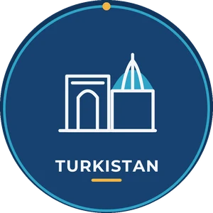
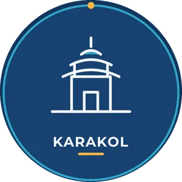
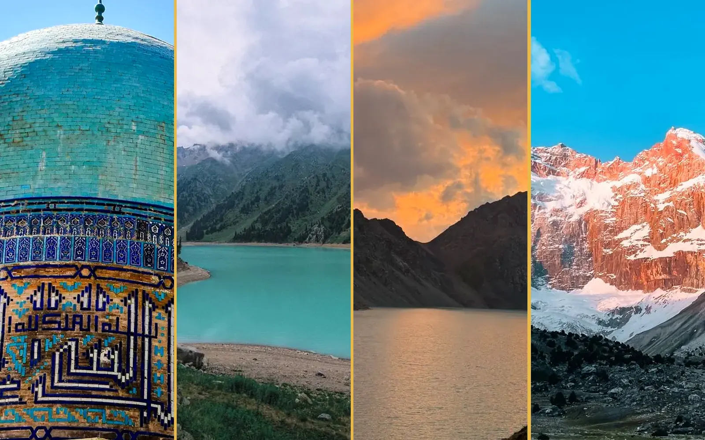
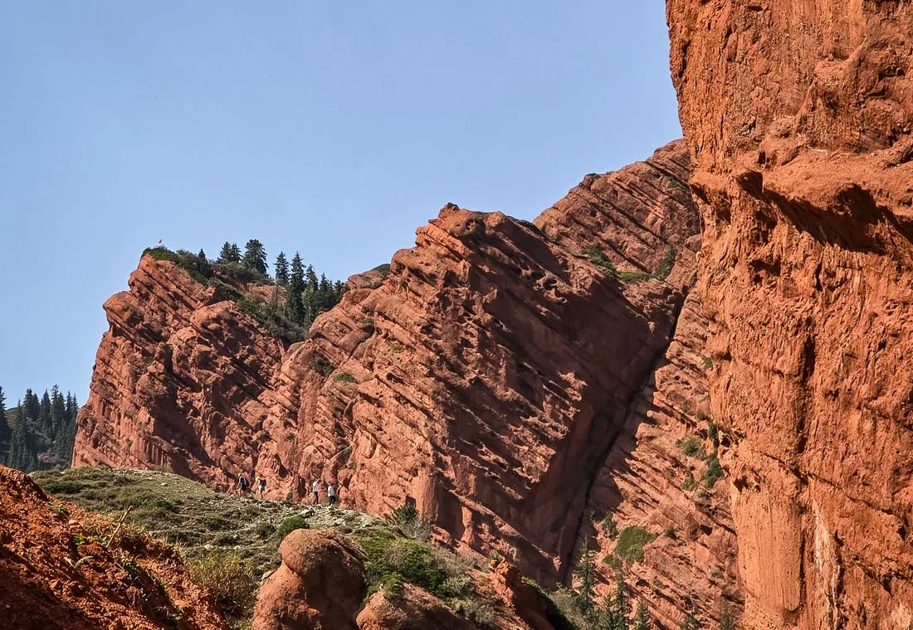
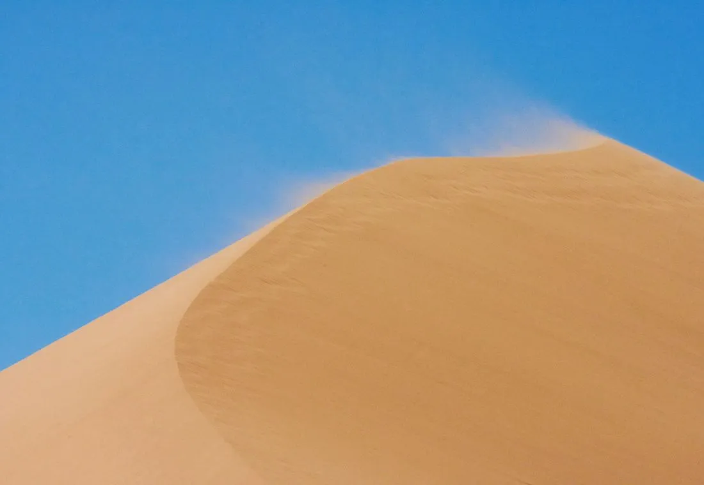

8 kun🔒 Tayyorlanmoqda
8 kun🔒 TayyorlanmoqdaUZ
Klassik O'zbekiston
Xiva · Buxoro · Samarqand · Toshkent
Xiva, Buxoro, Samarqand va Toshkent — Xivadan boshlanadi, har shanba
dan… 1 kishi uchun
Turni ko'rish →O'zbekiston bo'ylab shaxsiy va kichik guruh turlari — Samarqand, Buxoro va Xivaning feruza gumbazlari, cho'ldagi o'tovlar, tog' ko'llari va samimiy mehmondo'stlik. Hammasini biz tashkil qilamiz, siz faqat sayohat qilasiz.
O'zbekiston haqida ko'proq bilishXivadan Samarqandgacha va Farg'ona vodiysi — bitta sayohatda. Transport, gid va mehmonxonalarni biz o'z zimmamizga olamiz.
Samarqand, Buxoro va Xiva — tezyurar poyezdlar bog'lagan Ipak yo'lining moviy gumbazli durdonalari.
Olmaota atrofidagi tog'lar, Charin kanyonining qizil qoyalari va muqaddas Turkiston shahri.

Alp ko'llari, ko'chmanchilar o'tovlari, cheksiz yaylovlardagi otlar va Issiqko'l sohillari.

Qadimiy Panjakent, Sirdaryo bo'yidagi Xo'jand va dunyo tomi — Pomir.
Har bir davlatda oltitadan sinalgan yo'nalish — xarita, kunma-kun dastur va narxni ko'rish uchun turni oching.
8 kun🔒 TayyorlanmoqdaXiva, Buxoro, Samarqand va Toshkent — Xivadan boshlanadi, har shanba
 5 kun🔒 Tayyorlanmoqda
5 kun🔒 TayyorlanmoqdaIpak yo'lining ikki durdonasi besh kunda
 10 kun🔒 Tayyorlanmoqda
10 kun🔒 TayyorlanmoqdaXivadan Samarqandgacha, cho'lda o'tovda bir kecha bilan
 7 kun🔒 Tayyorlanmoqda
7 kun🔒 TayyorlanmoqdaBuyuk imomlar va so'fiy ustozlar ziyorati

15 kun🔒 TayyorlanmoqdaO'zbekiston, Tojikiston, Qozog'iston va Qirg'iziston — 15 kunda

8 kun🔒 TayyorlanmoqdaBurana minorasi, Issiqko'l, Oltin-Arashan issiq buloqlari, Jeti-O'g'iz, Ertak kanyoni va burgutchilar
 4 kun🔒 Tayyorlanmoqda
4 kun🔒 TayyorlanmoqdaShahar, Medeu, Katta Olmaota ko'li va Charin
 5 kun🔒 Tayyorlanmoqda
5 kun🔒 TayyorlanmoqdaJanubi-sharqiy Qozog'iston kanyonlari va tog' ko'llari
 8 kun🔒 Tayyorlanmoqda
8 kun🔒 TayyorlanmoqdaOlmaota, ko'llar, Turkiston va Astana
 4 kun🔒 Tayyorlanmoqda
4 kun🔒 TayyorlanmoqdaTurkiy dunyoning ma'naviy poytaxtiga ziyorat

4 kun🔒 TayyorlanmoqdaQadimiy petrogliflar, rangli tog'lar va kuylovchi qum
 4 kun🔒 Tayyorlanmoqda
4 kun🔒 TayyorlanmoqdaFuturistik poytaxt va «qozoq Shveytsariyasi»
 7 kun🔒 Tayyorlanmoqda
7 kun🔒 TayyorlanmoqdaIliq ko'l, qizil qoyalar, burgutchilar va kanyonlar
 5 kun🔒 Tayyorlanmoqda
5 kun🔒 TayyorlanmoqdaO'tovlar, otlar va 3016 m dagi ko'l
 9 kun🔒 Tayyorlanmoqda
9 kun🔒 TayyorlanmoqdaQirg'izistonning eng yaxshisi to'qqiz kunda
 6 kun🔒 Tayyorlanmoqda
6 kun🔒 TayyorlanmoqdaMuzlik ko'li va Oltin-Arashan issiq buloqlari
 6 kun🔒 Tayyorlanmoqda
6 kun🔒 TayyorlanmoqdaTosh karvonsaroy va o'tovlarda tunash
 4 kun🔒 Tayyorlanmoqda
4 kun🔒 Tayyorlanmoqda3000 yillik shahar va ulkan yong'oq o'rmoni
Burana minorasi, Issiqko'l, Oltin-Arashan issiq buloqlari, Jeti-O'g'iz, Ertak kanyoni va burgutchilar
 5 kun🔒 Tayyorlanmoqda
5 kun🔒 TayyorlanmoqdaIskandarko'l, Yetti ko'l va qadimiy Panjakent
 10 kun🔒 Tayyorlanmoqda
10 kun🔒 TayyorlanmoqdaDushanbedan O'shgacha «Dunyo tomi» bo'ylab
 3 kun🔒 Tayyorlanmoqda
3 kun🔒 TayyorlanmoqdaFan tog'lari ko'llariga qisqa sayohat
8 kun🔒 TayyorlanmoqdaIpak yo'li shahri va Fan tog'lari ko'llari
 6 kun🔒 Tayyorlanmoqda
6 kun🔒 TayyorlanmoqdaHisor, Istaravshan, Xo'jand va sug'd Panjakenti
 7 kun🔒 Tayyorlanmoqda
7 kun🔒 TayyorlanmoqdaZumrad ko'llar orasida chodirli treking
Mos tur topmadingizmi? Juftliklar, oilalar va guruhlar uchun alohida marshrut tuzib beramiz.
Shaharlar, madaniyat va tabiat haqida qisqa filmlar — sayohatdan oldin tomosha qiling.
Videolar O'zbekiston Turizm qo'mitasining rasmiy kanalidan va xalqaro OAVdan (Euronews, BBC, Insider, Eater) · YouTube'da ko'rish →
Har qanday davlatdan yakka sayohatchilar va juftliklar uchun: aniq sanalar, ingliz tilidagi gidlar, hammasi tashkil qilingan.
Alohida xizmat bron qiling — gid, transport, mehmonxona, aeroportda kutib olish yoki eSIM — to'liq tur sotib olmasdan.
Saralangan mahalliy mutaxassislar. Haqiqiy sharhlar; bron va to'lov Moviy Nomad orqali — xavfsiz.
Joylar, tunlar soni, mehmonxona, transport va gidni tanlang — xaritada marshrut va taxminiy narxni darhol ko'ring.
Yig'ishni boshlash →


Jamoamiz O'zbekistonda yashaydi va har bir ko'cha, gid va yashirin go'shani biladi.
Mehmonxona, poyezd, transfer, gid va kirish chiptalari — bitta tushunarli paketda.
Halol taomlar, namoz vaqtiga mos dastur va oilalar uchun qulay sur'at.
Ingliz va rus tilidagi gidlar; turk va arab tilida — so'rov bo'yicha.
Yashirin to'lovlarsiz — bron qilishdan oldin narxga nimalar kirishini ko'rasiz.
Butun sayohat davomida WhatsApp yoki Telegram'da jonli menejer.
2,5 yil davomida Moviy Travel jamoasi 10 000 dan ortiq sayohatchiga xizmat ko'rsatdi. Moviy Nomad — o'sha jamoa, gidlar va haydovchilar endi butun dunyodan keladigan mehmonlar uchun: O'zbekiston bo'yicha litsenziyalangan tur operator (DMC) — Xiva, Buxoro, Samarqand, Toshkent va boshqa joylar.
✓Litsenziyalangan tur operator — O'zbekiston Respublikasi Turizm qo'mitasi, litsenziya № 887333
Sayohatlarimizni Instagram'da ko'ring: @moviy_travel58 ming obunachi · real sayohatlar va sayohatchilar bilan 600+ post→Sanalar, guruh soni va istaklaringizni WhatsApp yoki Telegram'da yozing.
Guruhingiz uchun kunma-kun dastur va aniq narxni tayyorlaymiz.
Sizni aeroportda kutib olamiz, qolgan hamma ishni o'zimiz hal qilamiz.
Sayohatchilarimiz guruhidagi haqiqiy xabarlar.
“Biz uchun qilgan mehnatlaringiz, chekkan zahmatlaringiz uchun rozi bo'ling. Yilda bir marta sayohat qilishni niyat qildim — sizlar orqali, do'stlarim va yaqinlarim bilan.”
“Xizmat ko'rsatish a'lo darajada: haydovchimiz Nodirbek hammaga aka-ukadek muomala qildi, yo'lning uzoqligi ham sezilmadi. Borishni o'ylab yurganlar bo'lsa — bemalol boringlar, afsus qilmaysizlar.”
“Ota-onam bilan borgan edim, ularga juda yoqdi — kelasi yilga ham rejalashtirib qo'ydik. Boshida biroz ikkilangandim, hozir tur firmalar ko'p, lekin rostdan zo'r bo'ldi.”
“Biz kutgandan ham zo'r bo'ldi. 500 kishini bir joyga yig'ishning o'zi bo'lmaydi. Ming-ming rozimiz, shunaqa turlarni ko'proq uyushtirib turinglar!”
“O'tgan bir hafta men uchun chindan ham unutilmas bo'ldi — balki birinchi sayohatim bo'lgani uchundir. Go'zal taassurotlar va ajoyib insonlar xotirasi bilan qaytdim.”
“Ilyosbek va jamoasiga katta rahmat — maroqli dam olishimiz uchun halol mehnatlarini ayamadilar. Guruhda ko'p do'st orttirdik.”
Sayohatchilarimiz yuborgan suratlar va taassurotlar. Biz bilan sayohat qildingizmi? O'zingiznikini qo'shing!
Hozircha hikoyalar yo'q — birinchi bo'lib ulashing.
Ko'plab davlatlar fuqarolari O'zbekiston, Qozog'iston va Qirg'izistonga vizasiz yoki oddiy elektron viza bilan kirishi mumkin. Pasportingiz qaysi davlatniki ekanini yozing — amaldagi qoidalarni tekshirib beramiz.
Shaharlar uchun bahor (aprel–iyun) va kuz (sentabr–oktabr) eng qulay vaqt. Yoz — Qirg'iziston va Tojikiston tog'lari va ko'llari mavsumi.
Ha. Juftliklar va oilalar uchun shaxsiy turlar, shuningdek guruh turlari va turagentliklar uchun dasturlar tuzamiz.
Mintaqadagi taomlarning aksariyati halol. Dasturni namoz vaqtlari va muqaddas joylar ziyoratiga moslab ham tuzishimiz mumkin.
WhatsApp yoki Telegram orqali yozing. Dasturni tasdiqlaganingizdan so'ng bronni rasmiylashtiramiz va to'lov ma'lumotlarini yuboramiz.
Ha. Agentliklar va guruhlar uchun qabul xizmati va hamkorlik narxlarini taklif qilamiz.
O'zingizga qulay aloqa usulini tanlang — g'oyalar, dastur va narxni yuboramiz.
+998 99 980 42 14 · Safina Qozoqboyeva